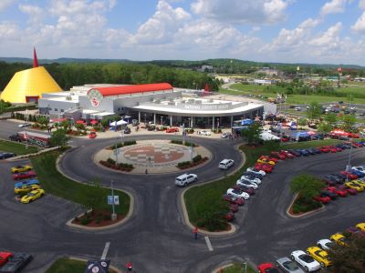
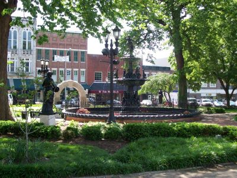
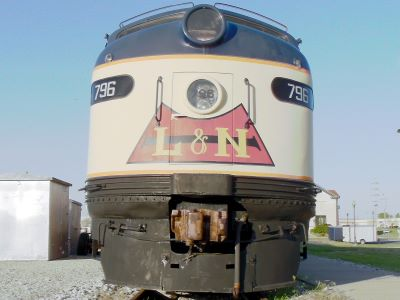
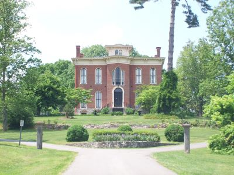
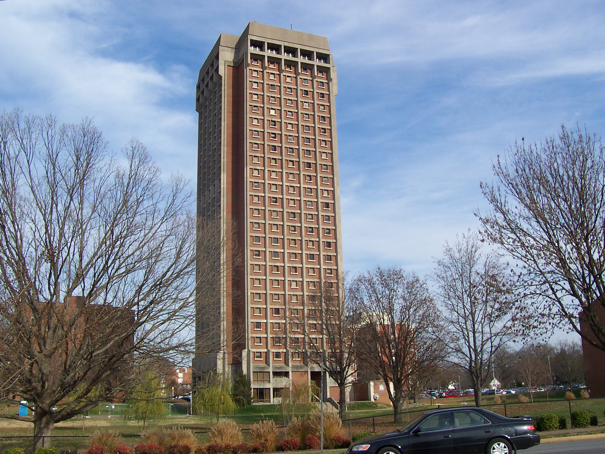

.jpg){kind=link}
Vibrant mid-sized city offering a mix of historic charm, motorsports culture, natural attractions, and southern hospitality through museums, parks, festivals, and culinary experiences.
Places to See in Bowling Green

Calstanhope, CC BY-SA 4.0, via Wikimedia Commons; Image Size Adjusted

Baker Arboretum and Downing Museum
Botanical gardens and art galleries featuring seasonal plant collections, outdoor sculptures, and rotating exhibitions of regional and international artwork.

Calstanhope, CC BY-SA 4.0, via Wikimedia Commons; Image Size Adjusted
Corvette Museum Library and Archives
Extensive automotive research facility and exhibition space dedicated to preserving the history and legacy of America's iconic sports car through archival collections and rotating displays.

Calstanhope, CC BY-SA 4.0, via Wikimedia Commons; Image Size Adjusted
Fountain Square Park
Historic urban green space featuring a central fountain, seasonal landscaping, and a venue for community events and live music.

Calstanhope, CC BY-SA 4.0, via Wikimedia Commons; Image Size Adjusted
Historic Railpark and Train Museum
Interactive museum and railcar exhibit offering guided tours, historical displays, and immersive experiences highlighting the golden age of American railroading.

Kenneth Dale Silvestri, CC BY-SA 4.0, via Wikimedia Commons; Image Size Adjusted

Kentucky Museum
Cultural and historical museum offering exhibitions on Kentucky heritage, decorative arts, and regional stories through permanent and rotating displays.

Lisa Andres, CC BY 2.0, via Wikimedia Commons; Image Size Adjusted

Lost River Cave
72-acre nature preserve offering Kentucky's only underground boat tour, scenic trails, a butterfly habitat, and seasonal eco-adventures for all ages.

Calstanhope, CC BY-SA 4.0, via Wikimedia Commons; Image Size Adjusted
Riverview at Hobson Grove
Restored Victorian mansion offering guided tours, period furnishings, and Civil War history in a scenic park overlooking the Barren River.
General Information
How to Get There
From Nashville, TN (67 mi): Take I-65 N from downtown Nashville and drive approximately one hour; take exit 22 or 28 for direct access to Bowling Green.
Overview
Bowling Green is a city in south-central Kentucky, the third-largest in the state, and it is famous as the home of the National Corvette Museum and the only place where Chevrolet Corvettes are built, at the Bowling Green Assembly Plant. It is also the home of Western Kentucky University and its Hilltoppers, and it sits above some of the most extensive cave systems in the world, including Lost River Cave and, 30 miles away, Mammoth Cave National Park. The city has a strong sense of local pride and a mix of college-town energy and Southern hospitality.
Visitors come to Bowling Green for the National Corvette Museum and a tour of the Corvette factory, for Lost River Cave, and for the history of the Historic RailPark. They also come for the downtown with Fountain Square Park, the Kentucky Museum at WKU, and the trails and parks, and it is a convenient stop on Interstate 65 between Nashville and Louisville.
History
The city was founded in 1798 and said to be named after Bowling Green, Virginia, and it grew as the county seat of Warren County. During the Civil War, Bowling Green was strategically important because of the railroad and river, and in November 1861 it was the capital of the Confederate government of Kentucky for a short time. Western Kentucky University grew from a normal school founded in 1906, and the Corvette assembly plant opened in 1981. In 2014, a large sinkhole opened in the Skydome of the Corvette Museum and swallowed eight rare Corvettes, drawing attention from around the world.
Sightseeing and Popular Landmarks
The National Corvette Museum has more than 80 Corvettes, including some of the cars that fell into the sinkhole, and the nearby Bowling Green Assembly Plant offers tours. Lost River Cave offers boat tours through an underground river, and Fountain Square Park is a downtown park with a fountain and events. The Historic RailPark and Train Museum is housed in a restored 1925 train depot, and Riverview at Hobson Grove is a historic Italianate mansion.
Culture and Museums
The Kentucky Museum at Western Kentucky University has exhibits on the history and culture of the state, and the Corvette Museum has a collection of Corvettes from every generation. The Downing Museum shows local history, and the Capitol Arts Center and the SKyPAC (Southern Kentucky Performing Arts Center) host concerts and shows. Mammoth Cave National Park, the longest known cave system in the world, is about a half hour from Bowling Green.
Parks
Bowling Green has a large park system, including the Greenways trail, the Lost River Cave and Valley, and the Baker Arboretum, which has a collection of trees and gardens. Beech Bend Park and Raceway has an amusement park, a campground, and a racetrack, and the Barren River Lake and Nolin Lake State Parks offer boating and fishing. Mammoth Cave National Park, with its cave tours, hiking, and paddling on the Green River, is a day trip.
Seasons and Weather
Bowling Green has a humid subtropical climate. Summers are hot and humid, with highs in the upper 80s°F, and winters are cool, with highs in the 40s°F and about 8 inches of snow. Spring and fall are the most comfortable seasons, and thunderstorms and the occasional tornado are possible in spring.
This article uses material from Wikipedia as well as information from official tourism and institutional sources. Key references include Visit Bowling Green, National Corvette Museum, Lost River Cave, Western Kentucky University, Mammoth Cave National Park, and National Weather Service Louisville. Wikipedia material is from the articles "Bowling Green, Kentucky" and "National Corvette Museum", and is available under the Creative Commons Attribution-Share-Alike License 3.0.
